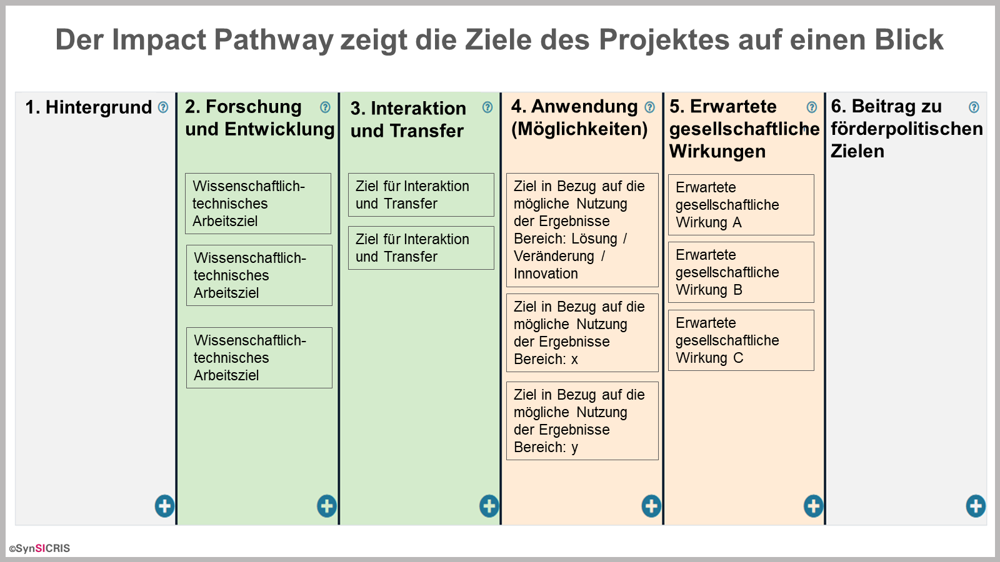
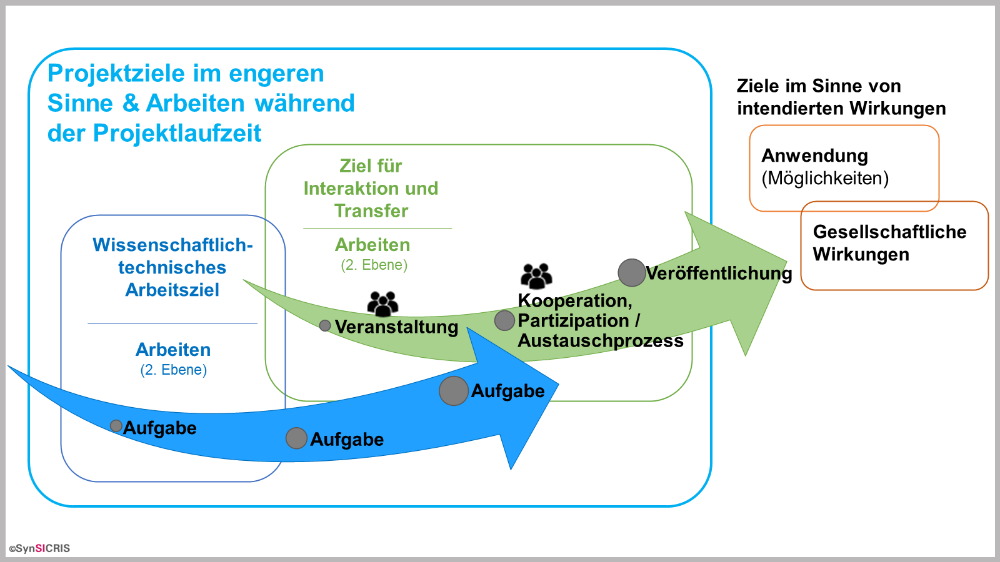

Wie werden die Projektziele im Monitoring-Tool dargestellt?
In Ihrer Vorhabensbeschreibung gibt es die Abschnitte Gesamtziele des Projektes und wissenschaftlich-technische Arbeitsziele. Im Monitoring-Tool geben Sie diese Ziele in Ihren Impact Pathway ein, unterteilt in Projektziele im engeren Sinne (Säule 2 und 3) und Ziele im Sinne von intendierten Wirkungen (Säule 4 und 5).
Projektziele im engeren Sinne:
- In Säule 2 sind die klassischen wissenschaftlich-technischen Arbeitsziele des Projekts eingetragen.
- In Säule 3 werden alle Ziele im Bereich Interaktion und Transfer hervorgehoben, unabhängig davon, ob sie Teil des Forschungsprozesses sind (wie in der transdisziplinären Forschung) oder ob sie als nachgelagert zum Forschungsprozess angesehen werden.
- Wichtig ist in Säule 2 und 3, dass Sie zwischen den Zielen und den Maßnahmen/Arbeiten im Projekt unterscheiden, die zum Erreichen dieser Ziele umgesetzt werden. Die Ziele werden auf der ersten Ebene des Impact Pathway erfasst. Die Maßnahmen/Arbeiten tragen Sie zu jedem einzelnen Ziel in der zweiten Ebene des Impact Pathway ein (siehe Inhalte strukturieren).
Ziele im Sinne von intendierten Wirkungen:
- In Säule 4 verdeutlichen Sie die Ziele in Bezug auf die mögliche Nutzung der Ergebnisse in Form einer Lösung, Veränderung oder Innovation sowie weitere Bereiche, in denen Sie Ihre Zielsetzung in Bezug auf die Anwendung verdeutlichen können, z.B. dass eine Ausgründung oder Patentanmeldung beabsichtigt ist.
- In Säule 5 verdeutlichen Sie die Ziele des Projektes in Bezug auf die erwartete gesellschaftliche Wirkung des Projektes. Also das, was sich für die Gesellschaft positiv verändert, wenn Projektergebnisse genutzt werden.


Leitfragen zur Unterscheidung von „wissenschaftlich-technischem Arbeitsziel“ und „Ziel für Interaktion und Transfer“
Wissenschaftlich-technisches Arbeitsziel:
- Was soll gemessen oder untersucht werden?
- Welche Hypothesen sollen überprüft werden?
Ziel für Interaktion und Transfer:
- Welche Ziele werden durch die Zusammenarbeit der Partner angestrebt?
- Was soll im Austausch mit anderen Akteuren herausgefunden werden?
- Welche Anforderungen oder Erfahrungen von Akteuren sollen in das Projekt integriert werden?
- Was soll im Transfer erreicht werden? Welche „Outputs“ werden für den Wissenstransfer erstellt?